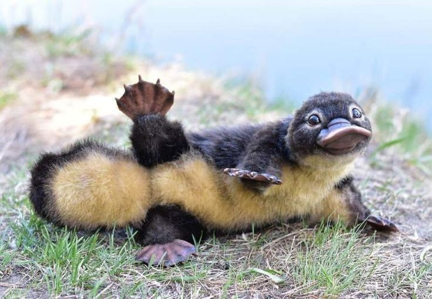
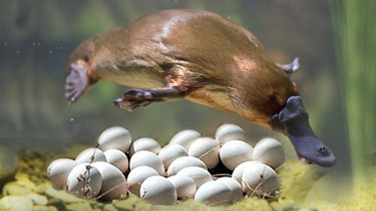
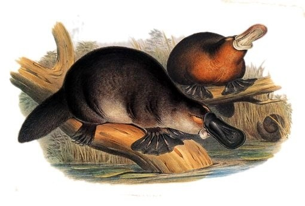

Apa itu Platypus?
Ini adalah platypus, yang memiliki nama ilmiah Ornithorhynchus anatinus, platypus memang merupakan hewan yg terlihat aneh tapi penampilan anehnya masih lebih mending jika dibandingkan dengan ikan dilaut dalam, anjing terjelek didunia, atau aye aye, hehehe. Para ilmuwan ternyata telah mempelajari DNA platipus dan telah menemukan bahwa platipus berbagi gen dengan reptil, burung dan mamalia. Mungkin itulah sebab nya platypus seperti gabungan dari bagian tubuh hewan tersebut.
Jika kita ingin menemukan platipus itu bukan perkara yg mudah karna mereka hidup hanya di satu wilayah kecil di bumi, yaitu wilayah air tawar yang mengalir di pulau Tasmania, serta pantai bagian timur Australia, mereka tinggal di dalam tanah, menggali tanah lembut diantara akar-akar pohon, jika kamu ingin menemukan platypus dengan mudah siapkan hadiah yg mereka sukai. Platypus adalah karnivora , yg memakan larva serangga, cacing dan udang air tawar.

Apa Yang Unik Dari Platypus?
Platyus bukan luar nya saja yang aneh platypus juga aneh didalam, platipus adalah mamalia yg bertelur, berkeringat susu, dan berburu menggunakan listrik. aneh bukan? platypus merupakan hewan yg populer di Australia karna mereka sangat ramah, mereka sangat nyaman bersosialisasi dengan manusia di cagar alam dan dikebun binatang. Alasan lain kenapa kamu ingin mengenal platipus mungkin karna asi atau bisanya yang dapat menyelamatkan hidup kita. Faktanya susu dan bisa platypus memiliki manfaat yang luar biasa bagi manusia, ilmuan Australia telah menemukan bahwasanya susu platypus memiliki kekuatan antibiotik yang menakjubkan, ilmuan ini menunjukan bahwa susu platypus memiliki kemampuan mengalahkan resistensi antibiotik dari bakteri yang dapat menurunkan kekebalan tubuh, dengan memperkuat antibody yg bisa menyelamatkan manusia dari wabah global, seperti wabah korona yg sedang menyerang kita, mungkin saja.
Tapi penelitian ini masih disempurnakan, tapi bagaimana platypus memproduksi susu nah sesuai dengan modus operandi platypus Cara ASI mereka keluar tentu saja aneh platypus betina memang memiliki kelenjar susu tapi mereka tidak memiliki puting. Seperti echidna, platipus adalah spesies monotrem terakhir, monotrem adalah mamalia yang bertelur, setelah pembuahan platypus betina akan bertelur antara minggu kedua hingga keempat setelah telur keluar maka akan dijaga oleh induknya atau diinkubasi selama seminggu sampai akhirnya telur menetas, sebagai informasi tambahan telur platypus tidak keras seperti telur ayam mereka lunak seperti telur reptil, induk platypus akan memberi susu kepada anak-anak mereka melalui pori-pori di perut mereka, susu platypus akan menggenang di perutnya dan bayi-bayi platypus akan menjilatinya.
Cara lain platypus dapat membantu manusia adalah melalui bisanya, bisa mereka sangat kuat sehingga dapat membunuh hewan kecil dan meskipun bisa platipus tidak kuat untuk membunuh manusia, tapi saya yakin bisa tersebut akan sangat menyakitkan, para peneliti telah menemukan bahwa bisa platypus dapat membantu kita mengembangkan obat baru untuk diabetes, hanya pejantan yang memiliki bisa ini, platypus jantan menyimpan bisa di dalam semacam taji yang menempel di belakang kaki mereka, taji tersebut akan selalu berada di tempat yang sama, tetapi bisa akan muncul hanya selama musim kawin.
Anehnya platypus jantan tidak menggunakan bisanya untuk membunuh mangsa atau mempertahankan diri dari predator yang termasuk anjing burung hantu dan rubah, mereka menggunakan taji berbisa mereka sebagai senjata untuk melawan pejantan lain dalam rangka memperebutkan perhatian dari sang betina. Oh iya Platypus juga menggunakan listrik di paruh mereka yang seperti bebek, mereka menggunakan kemampuan ini hanya saat berenang, didalam paruh ini terdapat elektron reseptor yang dapat mendeteksi sinyal listrik kecil yang dipancarkan oleh saraf dan jantung dari mangsa mereka, ketika tiba waktu untuk memakan mangsa yang mereka buru, terdapat lagi keanehan karena platypus tidak memiliki perut, kerongkongan mereka terhubung langsung ke usus mereka, mereka juga tidak memiliki gigi, sebagai gantinya mereka memiliki bantalan seperti gerinda, yang mampu menggiling makanan dengan sangat baik jadi tidak perlu dicerna oleh asam lambung, oh iya mereka memiliki kaki berselaput yang bekerja dengan sangat baik di bawah air, tapi kaki mereka ini menjadi tidak praktis di darat, selaput diantara jari kakinya membuat mereka sulit untuk berjalan di darat sehingga mereka harus berjalan dengan buku-buku jarinya, atau dengan kata lain Mereka berjalan dengan jari kaki yang mengepal, bukan tugas yang mudah. jika diperkirakan platypus akan menghabiskan sekitar 30% lebih banyak energi untuk berjalan di darat daripada bergerak di air, itu sebabnya mereka sering terlihat di air.

Informasi Tambahan
Hukum Australia melindungi platypus agar tidak dijadikan sebagai hewan peliharaan, platypus terdaftar sebagai hewan yang terancam punah kondisi kekeringan yang ekstrim dan berkepanjangan di Australia telah mengeringkan jaringan air yang membentuk habitat mereka dan tentu saja manusia juga punya peran, di abad ke-20 manusia memburu platypus untuk bulu indahnya, manusia juga menjadi penyebab hilangnya habitat platypus dengan pembukaan lahan dan perubahan iklim ditambah lagi bulan bulan terakhir ini kebakaran hutan di Australia juga turut mengurangi jumlah hewan bersahabat ini platypus telah membantu kita dalam banyak hal sekarang giliran kita membantu mereka.